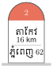
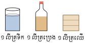
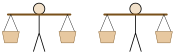

មេរៀនទី ៧ រង្វាស់រង្វាល់
វត្ថុបំណង
- ស្គាល់ខ្នាតរង្វាស់នៃរង្វាស់ទំហំ។
- ចេះវាយតម្លៃលើប្រមាណវិធីលើខ្នាតចំណុះបានត្រឹមត្រូវ។
- ចេះធ្វើប្រមាណវិធីលើខ្នាតពេលវេលា។
1. ខ្នាតរង្វាស់
1.1 រង្វាស់ប្រវែង
ឯកតាសំខាន់ៗនៃរង្វាស់ប្រវែងគឺម៉ែត្រ (\(\displaystyle m\)) ។ បើប្រវែងមួយមិនស្មើនឹងចំនួនគត់នៃម៉ែត្រ គេប្រើឯកតាតូចជាងម៉ែត្រដែលមាន ៖
ក. ឯកតាតូច
- ដេស៊ីម៉ែត្រ (\(\displaystyle 1dm\)) = \(\displaystyle 0.1m\)
- សង់ទីម៉ែត្រ (\(\displaystyle 1cm\)) = \(\displaystyle 0.01m\)
- មីលីម៉ែត្រ (\(\displaystyle 1mm\)) = \(\displaystyle 0.001m\)
ខ. ឯកតាធំ
- ដេកាម៉ែត្រ (\(\displaystyle 1dam\)) = \(\displaystyle 10m\)
- ហិចតូម៉ែត្រ (\(\displaystyle 1hm\)) = \(\displaystyle 100m\)
- គីឡូម៉ែត្រ (\(\displaystyle 1km\)) = \(\displaystyle 1000m\)
ដើម្បីរង្វាស់ប្រវែងពីទីក្រុងមួយទៅទីក្រុងមួយទៀត គេប្រើខ្នាតគីឡូម៉ែត្រ។ ចំនួនគីឡូម៉ែត្រពីកន្លែងមួយទៅកន្លែងមួយ គេសរសេរនៅលើបង្គោលគីឡូម៉ែត្រនៅតាមដងផ្លូវជាតិ។ ឧទាហរណ៍ បង្គោលគីឡូម៉ែត្រមួយតាំងនៅតាមដងផ្លូវជាតិលេខ 2 មានចម្ងាយ \(\displaystyle 62km\) ពីទីក្រុងភ្នំពេញមកទល់ទីតាំងបង្គោល ហើយនៅសល់ \(\displaystyle 16km\) ទៀតទើបទៅដល់ទីរួមខេត្តតាកែវ។

- ដើម្បីប្តូរឯកតាមួយទៅឯកតាតូចបន្ទាប់ក្បែរគ្នា គេត្រូវគុណចំនួននោះនឹង 10 ម្ដង ឬមួយដង។
- ដើម្បីប្តូរឯកតាមួយទៅឯកតាធំបន្ទាប់ក្បែរគ្នា គេត្រូវចែកចំនួននោះនឹង 10 ម្ដង ឬមួយដង។
នេះជាតារាងបញ្ជាក់ពីរបៀបបំបែក \(\displaystyle 503.16m\)
| \(\displaystyle km\) | \(\displaystyle hm\) | \(\displaystyle dam\) | \(\displaystyle m\) | \(\displaystyle dm\) | \(\displaystyle cm\) | \(\displaystyle mm\) 0 | 5 | 0 | 3 | 1 | 6 | 0 |
សុខាជិះម៉ូតូធ្វើដំណើរពីភ្នំពេញទៅលេងខេត្តសៀមរាប នៅពេលយប់សម្រាកគាត់បានឈប់សម្រាកនៅទីប្រជុំជនមួយដែលមានចម្ងាយ ( សៀមរាប 105 ជ 6 )។ តើសុខាធ្វើដំណើរបានចម្ងាយប៉ុន្មាន \(\displaystyle km\) ?
បង្គោលគីឡូម៉ែត្រសរសេរថា ( សៀមរាប 105 ជ 6 ) មានន័យថាពីកន្លែងឈប់នៅទីប្រជុំជនទៅសៀមរាបមានចម្ងាយ \(\displaystyle 105km\) ដោយចម្ងាយផ្លូវពីភ្នំពេញទៅសៀមរាបមានចម្ងាយ \(\displaystyle 314km\) ។ ដូចនេះ ចម្ងាយផ្លូវដែលសុខា ជិះម៉ូតូធ្វើដំណើរពីភ្នំពេញមកដល់កន្លែងឈប់គឺ \(\displaystyle 314km - 105km = 209km\)
គេវាស់ចម្ងាយពីភូមិ \(\displaystyle A\) ទៅភូមិ \(\displaystyle B\) ដោយប្រើខ្នាតដេកាម៉ែត្រមានប្រវែង \(\displaystyle 9.8m\) ។ រួចគេវាស់ចម្ងាយដដែលដោយប្រើខ្នាតដេកាម៉ែត្រត្រឹមត្រូវមានប្រវែង \(\displaystyle 10.10m\) ។ គេឃើញថាខុសពីមុនប្រវែង \(\displaystyle 1dam\) ។ រកចម្ងាយពិតប្រាកដរវាងភូមិ \(\displaystyle A\) ទៅភូមិ \(\displaystyle B\) ។
1.2 ខ្នាតផ្សេងៗ
នៅលើផ្ទៃសមុទ្រ គេមិនប្រើ \(\displaystyle km\) ទេ ។ គេប្រើ ម៉ៃល៍ (mill .mrin) = \(\displaystyle 1~852m\) ។ នៅប្រទេសអង់គ្លេស គេប្រើ
- អ៊ីញ (inch) = \(\displaystyle 2.54cm\)
- ហ្វីត (foot) = \(\displaystyle 30.48cm\)
- យ៉ាត (yard) = \(\displaystyle 3 feet = 0.9~114m\)
- ម៉ាយ (mile) = \(\displaystyle 1~760yd = 1~609.344m\) ។
រង្វាស់បុរាណខ្មែរមាន
- 1 ចំអាម = \(\displaystyle 0.20m\)
- 1 ហត្ថ = \(\displaystyle 0.50m\) (មានប្រវែងមួយកំភួនដៃ)
- 1 ព្យាម = 4 ហត្ថ = \(\displaystyle 2m\)
- 1 សិន = 20 ព្យាម = \(\displaystyle 40m\)
- 1 យោជន៍ = 400 សិន = \(\displaystyle 16km\) ។
ដងចបកាប់របស់ឪពុកសុខាមានប្រវែងមួយព្យាមពីរចំអាម ។ តើដងចបកាប់នោះមានប្រវែងប៉ុន្មានម៉ែត្រ ?
គេដឹងថា 1 ព្យាម = \(\displaystyle 2m\) ពីរចំអាមស្មើនឹង \(\displaystyle 0.2m \times 2 = 0.4m\) ដូចនេះ ដងចបកាប់មានប្រវែង \(\displaystyle 2m + 0.4m = 2.4m\) ។
ពូសម្លាញ់យកឫស្សីមួយដើមដែលមានប្រវែងស្មើនឹង 3 ព្យាម 1 ហត្ថ 2 ចំអាមមកវាស់ដីស្រែ ។ ក. រកប្រវែងទទឹងនិងបណ្តោយនៃដីស្រែ បើគាត់វាស់ទទឹងបាន 12 ដើមឫស្សីនិងបណ្តោយ 32 ដើមឫស្សី ។ ខ. រកក្រឡាផ្ទៃស្រែគិតជាអា ។ គ. រកប្រវែងខ្សែលួស (គិតជាសិន) បើគាត់ចង់ព័ទ្ធរបងចំនួន 3 ជុំ ។
1.3 ម៉ាស
បើគេលើកថ្មមួយដុំ នោះត្រូវការប្រឹងកម្លាំង តែបើគេលែងដៃនោះដុំថ្មនឹងធ្លាក់មកដីវិញ ។ នេះបង្ហាញថាមានកម្លាំងទាញមួយទាញដុំថ្មនោះឆ្ពោះទៅរកដី ។ ដូចនេះ គេសន្និដ្ឋានថា ទម្ងន់វត្ថុមួយជាកម្លាំងទំនាញផែនដីនៃវត្ថុនោះ ។ ឧទាហរណ៍ 2 បើគេថ្លឹងវត្ថុពីរ \(\displaystyle A\) និង \(\displaystyle B\) ម្ដងមួយៗទៅនឹងរ៉ឺស័រមួយ ។ បើវត្ថុ \(\displaystyle A\) ទាញរ៉ឺស័របានវែងជាងវត្ថុ \(\displaystyle B\) នោះគេថាម៉ាស \(\displaystyle A\) ធំជាងម៉ាស \(\displaystyle B\) ។ បើ \(\displaystyle A\) និង \(\displaystyle B\) ទាញរ៉ឺស័របានប្រវែងស្មើគ្នា នោះម៉ាស \(\displaystyle A\) ស្មើនឹងម៉ាស \(\displaystyle B\) ។ ដូចនេះ គេថា ម៉ាសជាទំហំរូបដូចគ្នាបាន ឬទំហំប្រមាណបាន ។
ឯកតាសំខាន់ៗនៃម៉ាសគឺ គីឡូក្រាម (\(\displaystyle kg\)) ។
- គីឡូក្រាម (\(\displaystyle kg\)) = \(\displaystyle 1~000g\)
- ហិចតូក្រាម (\(\displaystyle hg\)) = \(\displaystyle 100g\)
- ដេកាក្រាម (\(\displaystyle dag\)) = \(\displaystyle 10g\)
- ក្រាម (\(\displaystyle g\)) = \(\displaystyle 0.001kg\)
- ដេស៊ីក្រាម (\(\displaystyle dg\)) = \(\displaystyle 0.1g\)
- សង់ទីក្រាម (\(\displaystyle cg\)) = \(\displaystyle 0.01g\)
- មីលីក្រាម (\(\displaystyle mg\)) = \(\displaystyle 0.001g\) ។
រង្វាស់ខ្នាតបុរាណខ្មែរមាន ៖
- មួយហាប = \(\displaystyle 60kg\)
- មួយចុង ស្មើនឹងកន្លះហាប = \(\displaystyle 30kg\)
- មួយតៅ ស្មើនឹងពីរពៅ (មួយពៅស្មើនឹង \(\displaystyle 15kg\))
- មួយនាឡិ ស្មើនឹង 16 តម្លឹង = \(\displaystyle 600g\)
- មួយតម្លឹង ស្មើនឹង 10 ជី = \(\displaystyle 37.5g\)
- មួយជី ស្មើនឹង 10 ហ៊ុន = \(\displaystyle 3.75g\)
- មួយហ៊ុនស្មើនឹង 10 លី = \(\displaystyle 0.375g\) ។
កសិករធ្វើស្រែ 8 ហិចតា បានទិន្នផល 200 ហាប 5 ចុងក្នុងមួយហិចតា ។ គណនាទិន្នផលស្រូវជាគីឡូក្រាមនិងតោន ។ ចម្លើយ ទិន្នផលស្រូវជាគីឡូក្រាមនិងតោន \(\displaystyle 8(200 \times 60kg + 5 \times 30kg) = 97~200kg = 97.2t\) ។
តេងជឹងថ្លឹងដុំថ្មមួយបានដោយប្រើដុំថ្លឹងប៉ុន្មាន ។ គេប្រើកូនជញ្ជីង \(\displaystyle 2kg\) , \(\displaystyle 2kg\) , \(\displaystyle 5hg\) , \(\displaystyle 2hg\) , \(\displaystyle 2dag\) និង \(\displaystyle 1dag\) ។ រកម៉ាសនៃដុំថ្មជា ប្រសិនបើកូនថាសមានម៉ាស \(\displaystyle 1.5kg\) ហើយតេងជឹងដោយជញ្ជីងថ្លឹង ដោយដាក់លើថាសមួយនូវកូនជញ្ជីងដែលមានម៉ាសស្មើនឹង \(\displaystyle \frac{1}{10}\) នៃម៉ាសវត្ថុថ្លឹង។
1.4 ចំណុះ
រូបភាពដូចជាទឹក ប្រេង ឧស្ម័ន... គ្មានរាងជាក់លាក់ទេ វាមានរាងអាស្រ័យទៅលើវត្ថុដែលផ្ទុកវា ។ ដូចនេះ ចំណុះជាទំហំប្រមាណបានព្រោះវាមានមាឌ ។

គេអាចវាស់ចំណុះដោយប្រើឯកតាមាឌ ដូចជាមាឌទឹកមួយមានចំណុះ \(\displaystyle 3dm^3\) ដបមួយមានចំណុះ \(\displaystyle 1dm^3\) ។ ឯកតាមាឌឯកតាធំតូចជាងគ្នា \(\displaystyle 1~000\) ដង តែឯកតាចំណុះខុសគ្នា \(\displaystyle 10\) ដង ។ ចំណាំ ឯកតាសំខាន់ៗនៃរង្វាស់ចំណុះគឺលីត្រ (\(\displaystyle l\)) ហើយ \(\displaystyle 1l\) មានចំណុះស្មើនឹង \(\displaystyle 1dm^3\) ។
- ហិចតូលីត្រ (\(\displaystyle hl\)) : \(\displaystyle 1hl = 100l\)
- ដេកាលីត្រ (\(\displaystyle dal\)) : \(\displaystyle 1dal = 10l\)
- លីត្រ (\(\displaystyle l\))
- ដេស៊ីលីត្រ (\(\displaystyle dl\)) : \(\displaystyle 1dl = 0.1l\)
- សង់ទីលីត្រ (\(\displaystyle cl\)) : \(\displaystyle 1cl = 0.01l\)
- មីលីលីត្រ (\(\displaystyle ml\)) : \(\displaystyle 1ml = 0.001l\) ។
ដើម្បីផ្លាស់ប្តូរឯកតា គេធ្វើដូចឯកតារង្វាស់ប្រវែងដែរ
- គេត្រូវរំកិលចំណុចទៅខាងស្តាំម្ដងមួយខ្ទង់ កាលណាគេប្តូរទៅឯកតាតូចបន្ទាប់ ។
- គេត្រូវរំកិលចំណុចទៅខាងឆ្វេងម្ដងមួយខ្ទង់ កាលណាគេប្តូរទៅឯកតាធំបន្ទាប់ ។
- ដើម្បីប្តូរឯកតាចំណុះទៅឯកតាមាឌ ឬឯកតាមាឌ ទៅជាឯកតាចំណុះ គេសរសេរមាឌជា \(\displaystyle dm^3\) ចំនួននេះប្រាប់ចំណុះជាលីត្រ ព្រោះ \(\displaystyle 1dm^3 = 1l\) ។
- ចំណុះតិចដូចជា ទឹកអប់ ប្រេង ថ្នាំពេទ្យ គេដាក់ក្នុងដបដែលមានកម្រិតស្រាប់ \(\displaystyle 20cl\) , \(\displaystyle 75cl\) , \(\displaystyle 100cl\)... ។
- ចំណុះច្រើនដូចជា ប្រេងកាត សាំង ម៉ាស៊ូត ហ្គាស គេវាស់នឹងកុងទ័រជាលីត្រ (\(\displaystyle l\)) ។
បំបែក \(\displaystyle 72.83m^3\) ជា \(\displaystyle dm^3\) និងជា \(\displaystyle dl\) ។ ចម្លើយ \(\displaystyle 72.83m^3 = 72~830dm^3 = 72~830l = 728~300dl\)
បំបែក \(\displaystyle 357.65dl\) ជា \(\displaystyle l\) , \(\displaystyle dm^3\) , \(\displaystyle cm^3\) ។ ចម្លើយ \(\displaystyle 357.65dl = 35.765l = 35.765dm^3 = 35~765cm^3\) ។
ឪពុកផល្លីទិញប្រេងម៉ាស៊ូត 8 ធុងមានចំណុះ \(\displaystyle 225l\) ក្នុងមួយធុងៗ ហើយថ្ងៃ 15 000 ក្នុងមួយហិចតូលីត្រ ។ គាត់បញ្ចូលប្រេងទាំងអស់ទៅក្នុងដបដែលមានចំណុះ \(\displaystyle 75cl\) ។ ក. គេដឹងថានៅក្នុងធុងនីមួយៗមានកករ \(\displaystyle 3l\) ប្រើការមិនបាន ។ តើគាត់ច្រកប្រេងម៉ាស៊ូតបានប៉ុន្មានដប ? ខ. បើថ្លៃឈ្នួលច្រកដបអស់ \(\displaystyle 2~600\) រ ។ តើថ្លៃដើមប្រេងម៉ាស៊ូតមួយដបប៉ុន្មាន ? គ. ដើម្បីឱ្យចំណេញបាន 12
2. ពេលវេលា
2.1 សញ្ញាណរយះពេល
ធីតាបើកក្បាលរ៉ូប៊ីណេបង្ហូរទឹកដាក់ពាងមួយ ។ បើរយៈពេលទឹកហូរពេញពាងស្មើនឹងរយៈពេលដែលធីតាធ្វើលំហាត់រួច នោះគេថា រយៈពេលទាំងពីរនេះស្មើគ្នា ។ ឧទាហរណ៍ 2 បើគេដាំទឹកមួយកំសៀវពុះចំណាយពេលតិចជាងរយៈពេលធ្វើកិច្ចការមួយ រួចបន្តធ្វើកិច្ចការមួយទៀតចប់សព្វគ្រប់ នោះគេថារយៈពេលនៃការដាំទឹកមួយកំសៀវពុះតិចជាងរយៈពេលពេលធ្វើកិច្ចការទាំងពីរ ។
2.2 ឯកតាពេល
ថ្ងៃសូរិយគតិទាំងអស់មិនស្មើគ្នាទេ រយៈពេលវាមានការប្រែប្រួលទៅតាមរដូវ ។ ដោយយោងមធ្យមភាគនៃថ្ងៃទាំងអស់នេះ គេបានថ្ងៃសូរិយគតិមធ្យមដែលស្មើនឹង \(\displaystyle 86~400\) វិនាទី ។ ចំណាំ ឯកតាសំខាន់ៗនៃរយៈពេលគឺ វិនាទី (\(\displaystyle s\))
- 1 វិនាទី (\(\displaystyle s\))
- 1 នាទី (\(\displaystyle mn\)) = \(\displaystyle 60s\)
- 1 ម៉ោង (\(\displaystyle h\)) = \(\displaystyle 60mn = 3~600s\)
- 1 ថ្ងៃ (\(\displaystyle j\)) = \(\displaystyle 24h = 86~400s\) ។
2.3 ប្រមាណវិធីលើថេរវេលា
សៅចាប់ផ្ដើមធ្វើលំហាត់នៅម៉ោង \(\displaystyle 8h~16mn~12s\) គាត់ធ្វើលំហាត់ចប់នៅម៉ោង \(\displaystyle 9h~20mn~32s\) ។ រយៈពេលដែលធ្វើចប់ ។ រយៈពេលដែលសៅធ្វើលំហាត់គឺ \(\displaystyle 1h~04mn~20s\) ។
ប្តូរ \(\displaystyle 2j~3h~27mn~15s\) ជាវិនាទី
សុខាធ្វើដំណើរអស់រយៈពេល \(\displaystyle 259~248s\) ។ រករយៈពេលដែលសុខាធ្វើដំណើរគិតជាថ្ងៃ ម៉ោង នាទី និងវិនាទី ។ ចម្លើយ រយៈពេលគិតជាថ្ងៃ ម៉ោង នាទី និងវិនាទី
ដូចនេះ រយៈពេលដែលសុខាធ្វើដំណើរគឺ \(\displaystyle 3j~00h~00mn~48s\) ។
គណនា \(\displaystyle 7h~32mn~18s \times 12\) ចម្លើយ
ដូចនេះ \(\displaystyle 7h~32mn~18s \times 12 = 3j~18h~27mn~36s\) ។
នាឡិការបស់ពាន់ជើងដើរលឿន \(\displaystyle 1mn~35s\) ក្នុងមួយថ្ងៃ ឯនាឡិការបស់ស៊ីណាមដើរយឺត \(\displaystyle 2mn~10s\) ក្នុងមួយថ្ងៃ ។ នាឡិកាទាំងពីរនេះបានផ្ទៀងឱ្យត្រូវនៅម៉ោង 20 ថ្ងៃចន្ទ ។ ក. រំលងច្រើនថ្ងៃក្រោយមកស៊ីណាមឃើញនាឡិការបស់គាត់ដើរយឺត \(\displaystyle 17mn~30s\) ជាងនាឡិការបស់ពាន់ជើង ។ តើថ្ងៃនោះជាថ្ងៃអ្វី ? ខ. តើម៉ោងពិតត្រូវនឹងម៉ោងប៉ុន្មាន ?
លំហាត់
ពូជលអធ្វើម្ជុលដេរមួយដើមមានប្រវែង \(\displaystyle 35mm\) ។
- ក. បើគាត់មានដែកប្រវែង \(\displaystyle 4~620mm\) តើគាត់ធ្វើម្ជុលបានប៉ុន្មានដើម ?
- ខ. បើ 20
- លក្ខិណាវាស់កំណាត់បានមួយដុំ ដោយប្រើម៉ែត្រឈើមានប្រវែង \(\displaystyle 98cm\) រួចនាងវាស់ជាដុំដដែលដោយប្រើម៉ែត្រសំរឹទ្ធដែលមានប្រវែង \(\displaystyle 99cm\) ។ ក្នុងការវាស់លើកក្រោយនេះនាងឃើញថាដុំកំណាត់ខ្វះជាងមុន \(\displaystyle 1cm\) ។ តើកំណាត់ពិតប្រាកដប្រវែងប៉ុន្មានម៉ែត្រ ?
- មនុស្សពេញវ័យម្នាក់មានឈាម \(\displaystyle 5.5l\) ។ បើគេដឹងថាឈាម \(\displaystyle 1mm^3\) មានគោលិកាក្រហម 5 លាន ។ រកចំនួនគោលិកាក្រហមទាំងអស់ ។
រថយន្តមួយស៊ីសាំងអស់ \(\displaystyle 9l\) ក្នុង \(\displaystyle 100km\) ។ បើក្នុងធុងសាំងរថយន្តមានរាងប្រលេពីប៉ែតកែងដែលមានវិមាត្រ \(\displaystyle 85cm\) , \(\displaystyle 45cm\) និង \(\displaystyle 12cm\) ដោយវាស់ពីខាងក្រៅ ។ បើចំណុះ 10
- ក. តើក្នុងសាំងរថយន្តនោះមានចំណុះពិតប៉ុន្មានលីត្រ ?
- ខ. តើរថយន្តនោះអាចធ្វើដំណើរបានចម្ងាយប៉ុន្មានគីឡូម៉ែត្រ ?
គណនាប្រមាណវិធីខាងក្រោម
- ក. \(\displaystyle 4h~14mn~45s + 5h~43mn~20s + 2h~18mn~15s\)
- ខ. \(\displaystyle 5h~25mn~55s + 1h~36mn~24s + 8h~04mn~23s\)
- គ. \(\displaystyle 13h~36mn~48s - 7h~36mn~54s\)
- ឃ. \(\displaystyle 4j~17h~47mn~56s - 2j~9h~13mn~12s\)
- ង. \(\displaystyle 7h~08mn~35s \times 7\)
- ច. \(\displaystyle 10h~05mn~20s \div 8\)
- ស្ត្រីម្នាក់ដេរអាវ 7 ប្រើរយៈពេលអស់ \(\displaystyle 1h~24mn\) ។ តើគាត់ដេរបានអាវប៉ុន្មានក្នុងរយៈពេល \(\displaystyle 6h\) ?
កម្មករ 8 នាក់ជីកស្រះមួយហើយក្នុងរយៈពេល \(\displaystyle 4h~22mn\) ។

- ក. តើកម្មករ 1 នាក់ជីកស្រះក្នុងរយៈពេលប៉ុន្មាន ?
- ខ. បើគេប្រើកម្មករ 12 នាក់វិញ តើប្រើរយៈពេលប៉ុន្មាន ?
ខ្លឹមសារ៖ សៀវភៅពុម្ពគណិតវិទ្យាថ្នាក់ទី៧ របស់ក្រសួងអប់រំ យុវជន និងកីឡា · វាយអត្ថបទ គូររូបភាពឡើងវិញ និងរៀបចំលើអនឡាញដោយលោកគ្រូ សាន សុខលី សម្រាប់ការសិក្សាដោយឥតគិតថ្លៃ និងមិនរកប្រាក់ចំណេញ។ មិនមែនជាការបោះពុម្ពផ្លូវការរបស់ក្រសួងទេ។